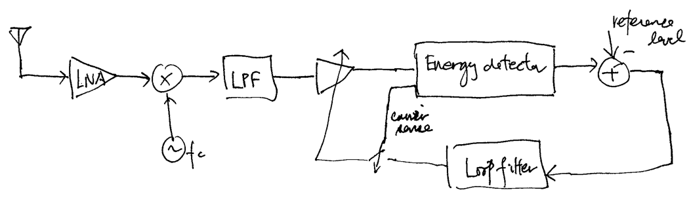

6.2. RX Signal Capture#
6.2.1. Carrier Sensing / Energy Detector#
We are primarily interested in implementing a packet-switched communication system here. We do not transmit contInuously in a typical packet-switched system. Moreover, transmission doesn’t necessarily occur in regular intervals.
As a result, the RX needs to determine if and when the transmission of a packet occurs by observing the RX signal. This functionality of the RX is commonly referred to as carrier sensing.
Carrier sensing is often implemented using a simple energy/power detector. The block diagram below shows a typical energy detector in the complex baseband:
The lowpass filter (LPF) is to remove out-of-band noise and interference (more discussion about it below). This simple energy detector is often also called a receive signal strength indicator (RSSI).
Practically, the energy detector may be digitally implemented in the baseband or in IF stage, or in RF stage with analog circuitry.
The choice of the detection threshold can be determined analytically based on a suitable channel model (with known parameters) and detection criterion. For example, one may use the Neyman-Pearson criterion to choose the optimal threshold that maximizes the detection probability while maintaining a small false alarm probability under the additive white Gaussian noise channel model. Practically, the threshold is often chosen based on experimentation and measurement.
In some battery-limited systems (e.g. in sensor networks), the RX may turn on the rest of its RX circuitry only when the energy detector fires.
USRP implementation:
The SBX/CBX daughterboard doesn’t provide a RSSI interface that is accessible by UHD. Thus, the only option is to implement a software-based energy detector using the receive samples supplied by the USRP at the host computer. Clearly, that means we cannot use such a carrier sensing implementation to turn on the USRP RX only when the energy detector fires. The RX has to be always on for our energy detector to work!
We may only use such an energy detector to determine whether the RX signal samples correspond to the transmission of a packet or to just noise. Nevertheless, this may still be a significant function because we may skip all computationally taxing RX processing steps when the RX samples contain just noise.
The energy detector suggested in Lab 2 is an example of a simple software-based energy detector using a first-order IIR filter as the LPF in the diagram above. Let the input to the energy detector be \(x[n]\) and the output of the RSSI output be \(y[n]\). Then, we obtain \(y[n]\) according to the following difference equation that implement the IIR filter:
\[\begin{equation*} y[n] = \alpha y[n-1] + (1-\alpha) \cdot |x[n]|^2 \end{equation*}\]where \(0\leq \alpha < 1\) is the smoothing parameter of the IIR filter.
{kind=link}
6.2.2. Matched Filter Energy Detector#
If the TX signal to be captured is a linearly modulated signal
\[\begin{equation*} x(t) = \sum_{n = -\infty}^{\infty} b[n] p(t-nT), \end{equation*}\]in the complex baseband, and the channel is an additive white Gaussian noise channel, a better carrier sensing structure is as below:
The filter with impulse response \(p^*(-t)\) is known as the matched filter (MF). While the impulse response \(p^*(-t)\) is non-causal, the MF can be made causal easily by adding a proper delay to its impulse response. Since \(p(t)\) is the TX pulse shape (e.g., the RCC pulse), the MF is typically a LPF.
Note that the MF detector and the energy detector above differ in that the positions of the (absolute) squarer and the filter are swapped. While the MF detector gives better detection performance, the difference in performance between the MF detector and the energy detector is small when the SNR is high.
The energy detector requires a LPF working in the real domain. However, the MF detector requires the filter to work in the complex domain.
The optimal detector structure above can be derived from a simple binary hypothesis testing formulation under the Neyman-Pearson criterion:
For a simple development, assume only one symbol is sent. Then the RX signal is
\[\begin{equation*} r(t) = b[0] p(t) e^{j\theta} + n(t) \end{equation*}\]where \(\theta\) is uniformly distributed over \([-\pi,\pi]\) modeling the unknown carrier phase and \(n(t)\) is the complex-valued AWGN process that models thermal noise.
It is well known [3] that the likelihood ratio test (LRT) is the optimal Neyman-Pearson detector. It is also not too hard to show that the LRT is equivalent to comparing the following statistic
(6.8)#\[\begin{equation} \left| \int_{-\infty}^{\infty} r(t) p^*(t) dt \right|^2 = \left| r(t) * p^*(-t) \big|_{t = 0} \right|^2 \end{equation}\]to an optimally chosen threshold \(\gamma\) in accordance with the false alarm constraint. This shows that the MF detector generates the decision statistic that is optimal in the Neyman-Pearson sense when a single symbol is sent.
The hypothesis testing formulation above does not take into account the facts that the arrival time of the signal is unknown and that the linearly modulated TX signal always contains more than one symbol.
The arrival time can be modeled as a deterministic unknown over a possible range. Then the “estimator-detector” approach [3] may be employed to obtain the generalized LRT, which in the case is simply to compare the maximum absolute squared value of MF output to a decision threshold over the possible time range.
Multi-symbol transmission can be handled by considering a model that contains multiple random symbols. However, the resulting LRT may be too complicated for practical implementation.
A slightly suboptimal approach to jointly address the two model oversights above is one shown in the figure where the MF output is continuously compared to a decision threshold to decide whether and when the detector should fire.
It is also quite clear by the Schwarz inequality that the MF also maximizes the
\[\begin{equation*} \text{Output SNR} \triangleq \frac{ \left| \int_{-\infty}^{\infty} p(t) h(-t) dt \right|^2}{E\left[\left| \int_{-\infty}^{\infty} n(t) h(-t) dt \right|^2\right]} \end{equation*}\]over all filter \(h(t)\).
USRP implementation:
The MF can be easily implemented in the host computer. Nevertheless, we will see later that the MF energy detector is somewhat redundant since a similar structure will be used for signal acquisition and synchronization.
A common practical approach is to employ the energy detector with a simple LPF, such as the first-order IIR filter discussed above, and a relatively loose detection threshold to achieve an almost perfect detection probability and let the subsequent acquisition stage (which uses the MF) rid out false alarms.
{kind=link}
6.2.3. Automatic Gain Control#
In many application scenarios, the distance between the TX and RX may vary from time to time. The RX signal level may not be constant. Other channel phenomena, such as shadowing, may also affect the RX signal level.
In the direct-conversion and superheterodyne architectures, the RX signal is sampled respectively at IF and baseband by ADCs for further processing. In practice, ADCs have finite resolution. Hence if the RX signal level is too low, quantization noise will be very significant. On the other hand, if the signal level is too high, clipping that leads to nonlinear distortions, will occur at the ADCs.
To avoid these problems, the RX signal should be amplified/attenuated, before feeding into the input of the ADC, to a level that matches the full dynamic of the ADC in order to minimize the effects of quantization noise and clipping.
The RX functionality that maintains the RX signal level to the full dynamic range of the ADC is called automatic gain control (AGC).
The diagram below illustrates a typical closed-loop baseband AGC for a direct-conversion RX:
Although not drawn as such, the RF frontend should be interpreted as a quadrature one.
Note that the AGC loop only switches on when carrier is sensed by the energy detector. This is to make sure that the detection threshold used by the energy detector can properly detect the carrier.
The closed-loop time constant of the AGC needs to be much smaller than the packet length so that the AGC loop settles quickly at the beginning of the packet before the reception (and hence processing) of the packet payload. In practice, a preamble is often added to the beginning of a packet to allow the AGC loop time to settle.
AGC can also be implemented at RF in analog circuitry, or digitally at IF, or a combination of some or all at baseband, IF, and RF.
USRP implementation:
Although the SBX/CBX daughterboard has a variable gain amplifier in its RX chain, the data sample transfer latency from the USRP to the host makes the closed-loop time constant of the AGC large (typically in the order of ms). Hence, the closed-loop, per packet AGC discussed above may only be implemented in the FGPA on the N210 motherboard, unless the large time constant of the host-based implementation can be tolerated.
Luckily, the ADCs in the USRP N200/N210 motherboard has a resolution of 14 bits. This resolution gives sufficiently small quantization errors for many typical application scenarios, even no closed-loop AGC is performed.
Nevertheless, we often still want to implement a software “AGC” in the host based on the RX signal samples from the USRP. The main job of such an AGC is to automatically scale the signal to a desired level for later processing. Since we often process blocks of RX samples at the host computer, we may simply apply the requirement normalization in an open-loop manner on each block of RX samples.
{kind=link}